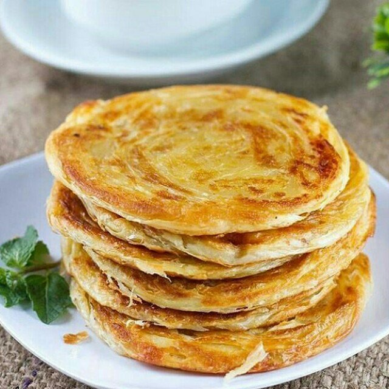

Resep Kue Maryam
Bahan-bahan:

250 gr tepung terigu
1 butir telur
3 sdm margarin, lelehkan
100 ml air hangat
2 sdm susu bubuk (optional)
1/2 sdt garam
margarin leleh untuk olesan
minyak utuk merendam
Langkah-langkah
- Siapkan wadah, campur air, minyak goreng dan telur, aduk hingga rata menggunakan wisk atau garpu

- Masukkan tepung terigu, susu, dan garam, uleni sampai kalis

- Bagi adonan sama rata, bentuk bulat-bulat, olesi margarin diseluruh bagian sampai rata (boleh pakai margari cair/minyak goreng). Setelah itu tutup dengan plastik dan lap basah, diamkan selama 1 jam

- Ambil satu adonan, pipihkan hingga tipis olesi dengan margarin secara merata

- Lalu gulung perlahan sampai bentuk memanjang dan sedikit ditarik agar lebih panjang[1]. Kemudian gulung melingkar dengan arah berlawanan jadi seperti huruf 'S'[2]. ketika sudah bertemu ditengah, lalu tumpuk Jadi satu[3]

- Panaskan teflon, ambil adonan yang sudah di tumpuk jadi satu[3] kedalam teflon, langsung pipihkan dengan cara ditekan memutar menggunakan serokan penggorengan

- Jika bagian bawah sudah sedikit mengeras, balik lalu tekan memutar lagi, balik tekan kembali hingga semua sisi berwarna kuning kecoklatan,
- Jika semua sisi sudah berwarna kuning kecoklatan, angkat dan lakukan kembali pada adonan berikutnya hingga habis

- Apabila sudah matang semua, sajikan dengan topping sesuai selera..roti ini enak juga dimakan bersama semangkuk gulai untuk pengganti nasi🍵🍴